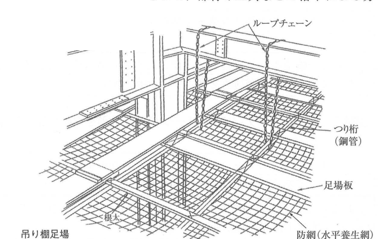
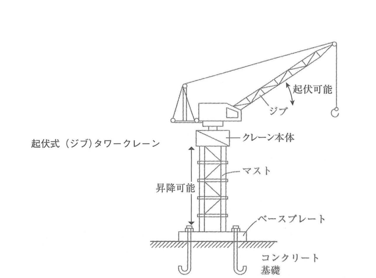

原文
建築工事における次の設問1から設問3の仮設物について、設置計画の作成に当たり、留意又は検討すべき事項をそれぞれ2つ具体的に記述しなさい。
ただし、解答はそれぞれ異なる内容の記述とし、申請手続、届出及び運用管理に関する記述は除くものとする。また、使用資機材に不良品はないものとする。
- つり足場
- 起伏式（ジブ）タワークレーン
- 仮設ゴンドラ
建築工事における次の設問1から設問3の仮設物について、設置計画の作成に当たり、留意又は検討すべき事項をそれぞれ2つ具体的に記述しなさい。
ただし、解答はそれぞれ異なる内容の記述とし、申請手続、届出及び運用管理に関する記述は除くものとする。また、使用資機材に不良品はないものとする。
Đối với các công trình tạm từ Câu 1 đến Câu 3 dưới đây trong công trình xây dựng, khi lập kế hoạch bố trí, hãy trình bày cụ thể 2 nội dung cần lưu ý hoặc cần xem xét cho mỗi loại.
Các câu trả lời phải có nội dung khác nhau; không được viết về thủ tục xin phép, khai báo hoặc quản lý vận hành. Đồng thời, giả định rằng vật tư và thiết bị sử dụng không có khuyết tật.
| 設問 | 仮設物 | 留意事項・検討事項 |
|---|---|---|
| 1 | つり足場 労働安全衛生規則 |
①作業者の墜落・物体の落下を防止するため、足場板の下部全面に水平養生網を取り付ける計画とする。 ②足場の構造や材料に応じて、作業床の最大積載荷重を定め、これを超えて積載しないよう、最大積載荷重を明示する計画とする。 |
| 2 | 起伏式（ジブ）タワークレーン クレーン等安全規則 |
①アンカーボルトとボルト孔の位置が一致していることや、基礎天端が水平であることを確認する計画とする。 ②使用する予定のジブクレーンについて、過負荷防止や制動に関する安全装置の正常作動を示す自主検査記録があることを確認する。 |
| 3 | 仮設ゴンドラ ゴンドラ安全規則 |
①ゴンドラ下部の作業範囲内に関係者以外が立ち入らないよう、柵を設けるなどの立入禁止措置を行い、誘導員を配置する計画とする。 ②使用する予定の仮設ゴンドラについて、ゴンドラ検査証・自主検査記録・制動装置の作動状態などを確認する。 |
| Câu | Công trình tạm | Nội dung cần lưu ý/xem xét |
|---|---|---|
| 1 | Giàn giáo treo Quy định An toàn và Vệ sinh lao động |
①Để phòng ngừa người lao động bị ngã và vật thể rơi, lập kế hoạch lắp lưới bảo vệ ngang trên toàn bộ mặt dưới của ván sàn giàn giáo. ②Căn cứ vào kết cấu và vật liệu của giàn giáo, xác định tải trọng chất tải tối đa của sàn công tác, đồng thời ghi rõ tải trọng chất tải tối đa để không chất vượt quá giới hạn này. |
| 2 | Cẩu tháp kiểu jib nâng hạ Quy định An toàn đối với Cẩu và các thiết bị tương tự |
①Kiểm tra vị trí bu lông neo và lỗ bu lông phải trùng khớp, đồng thời mặt trên móng phải nằm ngang. ②Kiểm tra có biên bản tự kiểm tra chứng minh thiết bị an toàn liên quan đến chống quá tải và phanh hoạt động bình thường. |
| 3 | Gondola tạm Quy định An toàn đối với Gondola |
①Để người không liên quan không đi vào phạm vi làm việc phía dưới gondola, thực hiện biện pháp cấm vào như dựng hàng rào và bố trí người hướng dẫn. ②Kiểm tra giấy chứng nhận kiểm định gondola, biên bản tự kiểm tra và tình trạng hoạt động của thiết bị phanh. |
吊り足場は、その上部構造物からループチェーンなどによって吊り下げられた足場（作業床）である。
吊り棚足場と吊り枠足場に分類されるが、建築工事では吊り棚足場の方が一般的である。
吊り足場の組立・解体・変更の作業を行う事業者は、その高さなどに関係なく、作業主任者を選任し、その者に作業を直接指揮させなければならない。
Giàn giáo treo（吊り足場） là giàn giáo, tức sàn công tác, được treo từ kết cấu phía trên bằng xích vòng hoặc bộ phận tương tự.
Giàn giáo treo được chia thành giàn giáo sàn treo（吊り棚足場） và giàn giáo khung treo（吊り枠足場）; trong công trình xây dựng, giàn giáo sàn treo được sử dụng phổ biến hơn.
Đơn vị thực hiện công tác lắp dựng, tháo dỡ hoặc thay đổi giàn giáo treo, không phụ thuộc vào chiều cao, phải chỉ định người phụ trách công việc và để người này trực tiếp chỉ huy công tác.
吊り棚足場は、鉄骨梁などからループチェーンによって吊り下げられた鋼管を井桁に組み、その鋼管の上に足場板を敷き並べて留め付けた足場である。
吊り棚足場は、ボルト締めや溶接作業を行うときに使用されるので、部材や工具などの落下による労働災害を防止するため、防網を設けるなどの措置を講じなければならない。
Giàn giáo sàn treo（吊り棚足場） là loại giàn giáo trong đó các ống thép được treo từ dầm thép bằng xích vòng, được lắp thành dạng lưới ô vuông（井桁）, sau đó ván sàn được xếp lên trên và cố định vào hệ ống thép.
Loại giàn giáo này dùng cho công tác siết bu lông và hàn. Để phòng ngừa tai nạn lao động do cấu kiện hoặc dụng cụ rơi xuống, phải áp dụng biện pháp như lắp lưới phòng rơi.

Tải trọng từ sàn công tác truyền qua 足場板 → 根太・つり桁 → ループチェーン → kết cấu thép phía trên. Lưới phía dưới là biện pháp phòng ngừa người hoặc vật rơi, không phải bộ phận chịu lực chính của sàn.
吊り枠足場は、チェーン類を使用せず、鉄骨梁に直接足場板を掛け渡した足場である。
吊り枠足場は、高層建築物の建設において現場取付け作業を極力少なくするために使用されるので、鉄骨の建方前に枠を取り付けておく必要がある。
その用途は、吊り棚足場と同様に、ボルト締め・溶接作業・配筋作業などである。
Giàn giáo khung treo（吊り枠足場） là loại giàn giáo không sử dụng xích, mà ván sàn được bắc trực tiếp lên dầm thép.
Trong thi công nhà cao tầng, loại này được dùng để giảm tối đa công tác lắp đặt tại công trường; do đó phải lắp khung trước khi dựng kết cấu thép.
Công dụng tương tự giàn giáo sàn treo, gồm siết bu lông, hàn và lắp dựng cốt thép.
吊り足場の設置計画を作成するときの留意事項・検討事項には、次のようなものがある。
Khi lập kế hoạch bố trí giàn giáo treo, các nội dung cần lưu ý và xem xét gồm:
労働安全衛生規則第574条に定められている吊り足場に関する規則のうち、設置計画の作成にあたっての留意事項・検討事項と関係する規則には、次のようなものがある。
Trong các quy định về giàn giáo treo tại Điều 574 của Quy định An toàn và Vệ sinh lao động, những nội dung liên quan đến kế hoạch bố trí gồm:
起伏式タワークレーン（クライミングクレーン）は、高層建築物の施工に使用される定置式クレーン（揚重機）の一種で、マストを塔のように積み重ねていくことでクレーン本体の昇降が可能であり、起伏可能なブームであるジブを有しているので吊り荷の移動に制約が少ない。
Cẩu tháp kiểu jib nâng hạ, còn gọi là climbing crane, là một loại cẩu cố định dùng cho công tác nâng hạ trong thi công nhà cao tầng. Bằng cách xếp nối các đoạn mast theo phương đứng, thân cẩu có thể được nâng lên; do jib có thể thay đổi góc nâng nên mức độ hạn chế đối với việc di chuyển tải treo tương đối nhỏ.
起伏式タワークレーンなどの定置式クレーンを選定するときは、次のような事項について検討する必要がある。
Khi lựa chọn cẩu cố định như cẩu tháp kiểu jib nâng hạ, cần xem xét:

Cẩu có hai cơ chế cần phân biệt: 起伏 là thay đổi góc của jib để thay đổi bán kính làm việc; 昇降・クライミング là nâng cao thân cẩu theo tiến độ chiều cao công trình.
起伏式タワークレーンの設置計画を作成するときの留意事項・検討事項には、次のようなものがある。
Khi lập kế hoạch bố trí cẩu tháp kiểu jib nâng hạ, các nội dung cần lưu ý và xem xét gồm:
ゴンドラとは、吊り足場および昇降装置その他の装置並びにこれらに附属する物により構成され、当該吊り足場の作業床が専用の昇降装置により上昇または下降する設備をいう。
ゴンドラは、構造物側面にレールが付いたメンテナンス専用の常設ゴンドラと、建築物の工事などのために一定期間だけ設置される可搬型ゴンドラに分類される。
一般に、仮設ゴンドラといった場合、この可搬型ゴンドラのことをいう。
仮設ゴンドラは、建物のリフォームや外壁補修に使用されるので、吊り下げワイヤロープが付いた可搬型ゴンドラとなっている場合が多い。
Gondola là thiết bị gồm giàn giáo treo, cơ cấu nâng hạ, các thiết bị khác và bộ phận đi kèm, trong đó sàn công tác của giàn giáo treo được nâng lên hoặc hạ xuống bằng cơ cấu nâng hạ chuyên dụng.
Gondola được chia thành gondola cố định（常設ゴンドラ） có ray trên mặt bên công trình để phục vụ bảo trì và gondola di động/tạm thời（可搬型ゴンドラ） chỉ được lắp trong một thời gian nhất định để phục vụ thi công.
Thông thường, 仮設ゴンドラ, tức gondola tạm, là loại 可搬型ゴンドラ.
Gondola tạm thường dùng trong cải tạo và sửa chữa tường ngoài, vì vậy phần lớn là gondola di động có cáp treo.
「可搬型ゴンドラの設置の安全基準に関する技術上の指針」では、その各部の定義について、次のようなことが定められている。
Trong “Hướng dẫn kỹ thuật về tiêu chuẩn an toàn khi lắp đặt gondola di động”, các bộ phận được định nghĩa như sau:
仮設ゴンドラの設置計画を作成するときの留意事項・検討事項には、次のようなものがある。
Khi lập kế hoạch bố trí gondola tạm, các nội dung cần lưu ý và xem xét gồm:
次の設問1から設問3の設備又は機械を安全に使用するための留意事項を、それぞれ2つ具体的に記述しなさい。
ただし、解答はそれぞれ異なる内容の記述とし、保護帽や安全帯などの保護具の使用、資格、免許及び届出に関する記述は除くものとする。
Đối với từng thiết bị hoặc máy từ Câu 1 đến Câu 3, hãy trình bày cụ thể 2 nội dung cần lưu ý để sử dụng an toàn.
Các câu trả lời phải có nội dung khác nhau; không được viết về việc sử dụng phương tiện bảo hộ như mũ bảo hộ hoặc dây an toàn, cũng như về điều kiện năng lực, giấy phép hoặc thủ tục khai báo.
ロングスパンエレベーターを安全に使用するための留意事項（クレーン等安全規則）
Các nội dung cần lưu ý để sử dụng an toàn thang nâng long-span:
高所作業車を安全に使用するための留意事項（労働安全衛生規則）
Các nội dung cần lưu ý để sử dụng an toàn xe nâng người làm việc trên cao:
バックホウを安全に使用するための留意事項（労働安全衛生規則）
Các nội dung cần lưu ý để sử dụng an toàn máy đào backhoe:
| 日本語 | 読み方 | Tiếng Việt | Giải thích | Liên quan |
|---|---|---|---|---|
| 仮設物 | かせつぶつ | Công trình/thiết bị tạm | Hạng mục được lắp để phục vụ thi công và tháo bỏ sau khi hết nhu cầu. | 設置計画・安全管理 |
| 吊り足場 | つりあしば | Giàn giáo treo | Sàn công tác được treo từ kết cấu phía trên. | 吊り棚足場・吊り枠足場 |
| 吊り棚足場 | つりだなあしば | Giàn giáo sàn treo | Ống thép treo bằng xích, lắp dạng lưới và đặt ván sàn lên trên. | ループチェーン・防網 |
| 吊り枠足場 | つりわくあしば | Giàn giáo khung treo | Không dùng xích; ván hoặc khung sàn được bắc trực tiếp lên dầm thép. | 鉄骨建方 |
| ループチェーン | ループチェーン | Xích vòng treo | Xích tạo vòng để treo dầm hoặc khung giàn giáo. | 吊り桁 |
| 吊り桁 | つりげた | Dầm treo | Ống thép hoặc dầm đỡ ván sàn của giàn giáo treo. | 足場板 |
| 根太 | ねだ | Thanh đỡ sàn / joist | Thanh phụ đỡ trực tiếp ván sàn. | 足場板 |
| 足場板 | あしばいた | Ván sàn giàn giáo | Vật liệu tạo mặt sàn công tác. | 作業床 |
| 水平養生網 | すいへいようじょうもう | Lưới bảo vệ ngang | Lưới bố trí dưới sàn để hạn chế nguy hiểm do người hoặc vật rơi. | 防網 |
| 最大積載荷重 | さいだいせきさいかじゅう | Tải trọng chất tải tối đa | Giới hạn tải trọng được phép đặt lên sàn hoặc thiết bị. | 作業床 |
| 作業主任者 | さぎょうしゅにんしゃ | Người phụ trách công việc | Người được chỉ định để trực tiếp chỉ huy công việc theo yêu cầu an toàn. | 吊り足場 |
| スターラップ | スターラップ | Stirrup / giá treo | Bộ phận đỡ hoặc treo dùng trong cấu tạo giàn giáo treo. | 足場桁 |
| 突梁 | つきばり | Dầm chìa | Dầm nhô ra làm điểm treo hoặc đỡ. | アンカーボルト |
| 控え | ひかえ | Thanh giằng | Bộ phận chống rung lắc và dịch chuyển. | 動揺・転位 |
| 起伏式タワークレーン | きふくしきタワークレーン | Cẩu tháp kiểu jib nâng hạ | Cẩu tháp có jib thay đổi góc nâng. | クライミングクレーン |
| 定置式クレーン | ていちしきクレーン | Cẩu cố định | Cẩu được bố trí cố định tại một vị trí trong công trường. | タワークレーン |
| ジブ | ジブ | Jib / cần cẩu | Bộ phận cần mang tải, có thể thay đổi góc ở loại 起伏式. | 旋回範囲 |
| マスト | マスト | Mast / thân tháp | Kết cấu tháp đứng đỡ phần quay của cẩu. | クライミング |
| クライミング | クライミング | Climbing | Công tác nâng cao thân cẩu theo tiến độ chiều cao công trình. | 昇降 |
| 揚程 | ようてい | Chiều cao nâng | Khoảng cao độ mà cẩu có thể nâng tải. | 揚重速度 |
| 揚重速度 | ようじゅうそくど | Tốc độ nâng hạ | Tốc độ vận chuyển tải bằng thiết bị nâng. | クレーン能力 |
| 中間ステー | ちゅうかんステー | Giằng trung gian | Liên kết giữ ổn định mast với công trình. | クレーン固定部 |
| 旋回範囲 | せんかいはんい | Phạm vi quay | Phạm vi jib quét qua khi cẩu quay. | ジブ干渉 |
| 動線 | どうせん | Động tuyến | Tuyến di chuyển của người, xe, máy hoặc vật liệu. | 平面配置 |
| アンカーボルト | アンカーボルト | Bu lông neo | Liên kết thiết bị hoặc kết cấu với móng. | ボルト孔 |
| 基礎天端 | きそてんば | Mặt trên móng | Mặt cao độ trên cùng của móng. | 水平確認 |
| 過負荷防止装置 | かふかぼうしそうち | Thiết bị chống quá tải | Thiết bị ngăn cẩu vận hành vượt giới hạn tải. | 安全装置 |
| 制動装置 | せいどうそうち | Thiết bị phanh | Cơ cấu hãm hoặc dừng chuyển động. | 自主検査 |
| 自主検査記録 | じしゅけんさきろく | Hồ sơ tự kiểm tra | Hồ sơ ghi nhận kết quả kiểm tra do đơn vị sử dụng thực hiện. | 検査証 |
| 仮設ゴンドラ | かせつゴンドラ | Gondola tạm | Trong bài này là gondola di động được lắp trong thời gian thi công. | 可搬型ゴンドラ |
| 常設ゴンドラ | じょうせつゴンドラ | Gondola cố định | Lắp thường trực, chủ yếu phục vụ bảo trì. | メンテナンス |
| 可搬型ゴンドラ | かはんがたゴンドラ | Gondola di động/tạm thời | Lắp trong một thời gian nhất định để thi công hoặc sửa chữa. | 仮設ゴンドラ |
| 躯体部分 | くたいぶぶん | Phần kết cấu công trình | Parapet, mái hắt, vòng neo hoặc phần kết cấu dùng để bố trí gondola. | パラペット・丸環 |
| 吊り下げワイヤロープ | つりさげワイヤロープ | Cáp treo | Cáp được gắn trực tiếp vào sàn công tác. | 作業床 |
| 台付けワイヤロープ | だいづけワイヤロープ | Cáp neo cố định | Cáp cố định một đầu của cáp treo vào phần kết cấu. | 躯体部分 |
| アーム台 | アームだい | Bệ tay đỡ | Bệ có tay đỡ dùng để mắc cáp treo. | 上部支持金具 |
| 上部支持金具 | じょうぶしじかなぐ | Phụ kiện đỡ phía trên | Phụ kiện dạng móc dùng để gắn cáp treo vào kết cấu. | 吊り下げワイヤロープ |
| 跨座式突梁 | こざしきとつりょう | Dầm chìa kiểu cưỡi trên parapet | Dầm vắt cáp và giữ khoảng cách giữa sàn gondola với tường. | パラペット |
| ロングスパンエレベーター | ロングスパンエレベーター | Thang nâng long-span | Thiết bị nâng có sàn/cabin dài để vận chuyển người hoặc vật liệu dài theo cấu hình được phép. | 積載荷重・昇降速度 |
| 高所作業車 | こうしょさぎょうしゃ | Xe nâng người làm việc trên cao | Xe có sàn công tác nâng người lên vị trí cao. | 作業指揮者 |
| バックホウ | バックホウ | Máy đào backhoe | Máy đào có gầu hướng về phía máy, thích hợp cho công tác đào thấp hơn vị trí máy. | バケット |
| 作業半径 | さぎょうはんけい | Bán kính làm việc | Phạm vi chuyển động có nguy cơ của máy hoặc thiết bị. | 立入禁止 |
| 誘導員 | ゆうどういん | Người hướng dẫn/điều phối | Người phát tín hiệu và hướng dẫn máy hoặc phương tiện vận hành an toàn. | 合図 |
Mọi đầu nối trong chuỗi phải đủ khả năng truyền tải và chống dịch chuyển. Lưới bảo vệ nằm dưới sàn có chức năng phòng rơi, không thay thế hệ chịu lực.
| Tiêu chí | 吊り棚足場 | 吊り枠足場 |
|---|---|---|
| Cách đỡ/treo | Dùng loop chain và ống thép lắp dạng lưới | Không dùng chain; bắc trực tiếp lên dầm thép |
| Thi công | Lắp hệ treo tại hiện trường | Lắp khung trước khi dựng kết cấu thép |
| Công việc điển hình | Siết bu lông, hàn | Siết bu lông, hàn, cốt thép |
起伏 là thay đổi góc của jib để thay đổi bán kính làm việc. クライミング là nâng thân cẩu lên theo mast khi công trình tăng chiều cao. Hai chuyển động này khác nhau về mục đích và cơ cấu.
Do phần kết cấu công trình là đầu cuối của chuỗi truyền lực, phải xác nhận không biến dạng, không nứt, không ăn mòn và có đủ cường độ trước khi lắp gondola.
| Đối tượng / parameter | Giá trị |
|---|---|
| 吊り桁の相互間隔 / Khoảng cách giữa dầm treo | 1,5～1,8 m |
| 鉄骨梁下端から足場板 / Mép dưới dầm thép đến ván sàn | Khoảng 500 mm |
| 吊り足場の作業床幅 / Chiều rộng sàn giàn giáo treo | Từ 40 cm trở lên |
| タワークレーンの1日揚重可能数 | 40～45 cấu kiện/ngày |
| 1回のクライミング | 1～2 ngày |
| ロングスパンエレベーターの積載荷重 | Thường dưới 1,0 t |
| ロングスパンエレベーターの昇降速度 | Dưới 10 m/phút |
| Đối tượng | Cặp nội dung cần tái hiện |
|---|---|
| 吊り足場 | Rơi ngã/vật rơi → lưới bảo vệ ngang Sàn công tác → xác định và ghi rõ tải trọng tối đa |
| 起伏式タワークレーン | Bu lông neo + mặt móng → kiểm tra vị trí và độ ngang Thiết bị an toàn → xác nhận hồ sơ tự kiểm tra |
| 仮設ゴンドラ | Phía dưới gondola → cấm vào + người hướng dẫn Bản thân thiết bị → kiểm định + tự kiểm tra + phanh |
| Thiết bị | Điểm an toàn trọng tâm |
|---|---|
| ロングスパンエレベーター | Chênh cao và che chắn cửa; tải trọng và tốc độ nâng hạ. |
| 高所作業車 | Người chỉ huy công việc; kiểm tra phanh/ly hợp và chướng ngại trong bán kính làm việc. |
| バックホウ | Không quay gầu qua đầu lái xe ben; cấm vào bán kính làm việc và bố trí người hướng dẫn. |
Năm Heisei 29 loại trừ nội dung về thủ tục xin phép, khai báo và quản lý vận hành. Năm Heisei 28 loại trừ nội dung về phương tiện bảo hộ, điều kiện năng lực, giấy phép và khai báo. Viết đúng biện pháp kỹ thuật nhưng rơi vào nhóm bị loại trừ vẫn không đáp ứng yêu cầu đề.
| {{HEADER_1}} | {{HEADER_2}} |
|---|---|
| {{ROW_KEY}} | {{ROW_RELATION}} |
{{NOTE_CONTENT}}
{{WARNING_CONTENT}}
{{MEMORY_ITEM}}